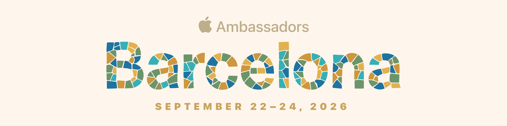

Hands-on session · 45 minutes
Build a Mac app by talking to it — three jobs, a look of your own, forty-five minutes, no code, and the customer's words never leave the laptop.
An app that records a sales conversation, pulls out the key points, and drafts the follow-up email — all on this MacBook, with the Wi-Fi off.
You won't write any code. You'll describe what you want and Xcode's assistant will build it. Say each sentence out loud if you can — the dictation is on-device too, which is the same thing you're selling. Every pair's window should look different on the gallery wall; this Mac already has a seed (title, colour, a customer in a particular industry). At the end you'll push that further.
Four minutes. Get the half-built app running, then wake up the assistant.
Read AGENTS.md, Ambassadors26/BUILD-SPEC.md, and SEED.md. Follow them whenever I ask for something, and prefer the exact APIs they name. Reply with just “ready”.
Right now the button does nothing. One sentence from you and it'll read the notes and give you fields you could drop into a CRM.
There are notes from a sales call in the left-hand pane. Make the Build initiative button actually read them and give me proper fields I could drop straight into our CRM, with how urgent this customer is right at the top — and all of it has to happen on this Mac, nothing leaves the laptop.
Turn the recommendation into an email you could actually send. Wi-Fi can stay off.
Good. Now write the follow-up email I’d actually send this customer after that conversation, and let me copy it or open it in Mail.
Stop typing notes. Let the app listen, on this Mac.
I don’t want to type my notes. Let me just talk to it and have it write them down while I’m speaking — and again, all on this Mac.
They’ve got about three hundred Windows laptops, most of them four years old. The help desk is drowning. And they’re nervous about patient data leaving the building.
The judges will see a wall of three-pane windows. Same jobs, different personality. This sentence is what stops yours looking like everyone else's.
This has to stand out on a wall of screenshots. Keep every button working, but give the window a look that is obviously ours — start from SEED.md and go further if you like.
The app stays on this Mac. The screenshot goes to the room gallery so staff can judge by looking. They are scoring three panes of working app and a look that isn't a clone of the next pair's.
Crop the window, not the whole desktop. An empty middle pane is an incomplete submission.
Your sentences were short, but the app still came out right. That's not mind-reading — there's a file in the project called BUILD-SPEC.md (and AGENTS.md) holding the detail you didn't say: which Apple frameworks to use, that it must never call the internet, and which of two similar-looking speech technologies is the current one.
Somebody wrote that file, once. Write the brief down properly a single time, and from then on everyone can ask for what they want in plain English. The seed and the last sentence are the same idea: same spec, different personality.
The on-device model is small and fast. It's excellent at pulling structure out of messy notes. It will not write your account strategy. Don't sell it as more than that.
Two more sentences to try later are in STRETCH.md.
Facilitators: see facilitator notes.
All of this is normal. Say the fix out loud, the same as everything else — you don't need to understand the error.
| What you're seeing | What to say |
|---|---|
| Xcode shows a red error | Copy the error text, paste it in, and add fix this |
| It built something odd | Have another look at BUILD-SPEC.md — that isn't what it asks for. |
| It asked you for an API key or an account | No. This has to run on the Mac, on device. No network calls. |
| Something that used to work has stopped | You've broken something that was working — put it back. |
| The button does nothing at all | I clicked Build initiative and nothing happened. |
| Two attempts have failed | In Terminal, from the Starter folder: git checkout . — that rewinds to the start. Then say the sentence again. |
| A notice about Apple Intelligence being unavailable | Not your fault and not fixable here. Put your hand up. |
| Dictation garbled your sentence | Use the Copy button instead and move on. Don't lose two minutes to it. |
| It used the old speech API / words only appear after you stop | Have another look at BUILD-SPEC.md — section 3. Use SpeechAnalyzer, not SFSpeechRecognizer. I want the words to appear while I'm still talking. |
| The site says that team name is already in | That's fine if it's yours — use the same name and PIN to resume. Otherwise pick a different name. |
Run sheet. 0:00 join on the website, then setup · 0:04 key points · 0:16 Wi-Fi off · 0:18 email · 0:28 record · 0:36 make it yours · 0:41 Wi-Fi on, screenshot on this tab. Hard checkpoint at 0:28: anyone not through the email still says the Record sentence, then screenshots with sample notes. Behind at 0:36? Skip “make it yours” — the seed already differentiates the window.
Between pairs. Double-click scripts/Reset Workshop.command.
It rewinds the project, picks a new look, and clears these ticks. The gallery is not touched.
Open a fresh Coding Assistant chat before the next pair sits down.
Pre-flight, days ahead, on every machine. Apple Intelligence on and fully
downloaded; Xcode 27 with the Coding Assistant signed in; dictation on and tested inside the
assistant field; Starter/ on the Desktop and run once to warm the build; the
finished app in ../Ambassadors26 run once including the record button,
to pre-download speech assets; gallery URL and event PIN on the projector; ~30 GB free.
The one thing that sinks this session is a room of Macs downloading on-device speech assets on conference Wi-Fi. Pre-download.
Full notes are in FACILITATOR.md.